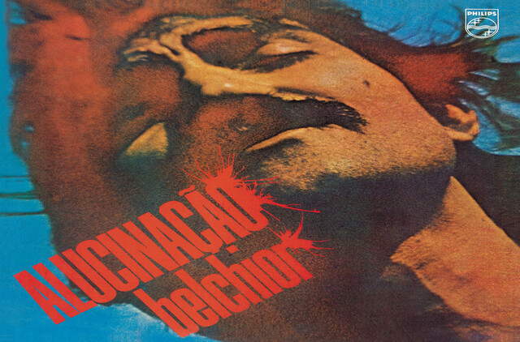
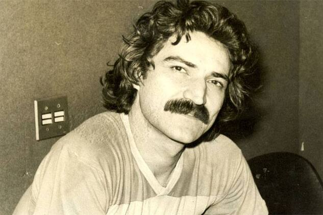

5 de agosto de 2022
História de Belchior
Antônio Carlos Belchior, mais conhecido somente como Belchior, foi um cantor, compositor, músico, produtor, artista plástico e um dos maiores nomes da Música Popular Brasileira.
Ficou famoso por canções como “Alucinação”, “Sujeito de Sorte”, “Coração Selvagem” e a música “Como Nossos Pais”, que ficou muito conhecida pela icônica versão na voz de Elis Regina. Com um visual memorável e voz única, Belchior foi muito mais que apenas um rapaz latino-americano, ele marcou a história da MPB.

5 de agosto de 2022
Canções de Belchior
Belchior foi um dos maiores compositores do Brasil, ele era muito mais que um compositor, era um poeta, entre suas canções mais marcantes está a música “Sujeito de Sorte” que é uma das canções mais marcantes do segundo álbum de estúdio de Belchior, Alucinação.
Outra música de muito sucesso na voz de belchior, “Comentário a respeito de John”, que traz uma canção em que faz referência a John Lennon e os The Beatles na canção “Happiness is a Warm Gun”, lançada no White Album, de 1968.

5 de agosto de 2022
Morte de Belchior
Belchior morreu em 30 de abril de 2017, aos 70 anos, na cidade de Santa Cruz do Sul. O governo do Ceará emitiu uma nota de pesar. A causa da morte foi a ruptura de um aneurisma da aorta, a principal artéria do corpo humano.
O governador do Ceará, Camilo Santana, decretou luto oficial de três dias, providenciando o traslado do corpo, garantindo assim o desejo do cantor de ser enterrado no Estado do Ceará, sendo velado em Sobral, sua cidade natal, e sepultado em Fortaleza.